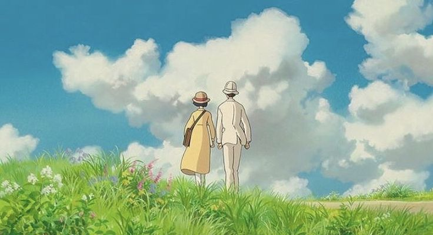

Hey Welcome To Denzy's Personal Blog!
-Day 4:
Yooo!, I'm Denzil and i would like to Welcome
you to my personal webpage while you are here feel
free to read and scroll
through and check my personal blog
on keeping track of what i have learnt in html so far! .
"I would love to show case
my html progress using this blog"
So let's start with string formatting which is importan when it comes
to any kind of web page almost 100% of information is given throught text.
I would like to already mention that all the text of the body using the center tag which
i learnt at start after just learning the html tag i didnt like how the web information
was all towards the left right.
"Note:This Webpage only focuses on html and only html no css was used except
for some property changes within some tags!"
String Formatting Tags:
This is a bold text that uses <b> tag -both strong and bold do the same
This is Italics <i> tag -both italics and emphasized do the same
This is underlined <u> -used to underline any text
This is big <big> used to make the text slightly bigger than normal text
This is small <small> used to make the text slightly smaller than normal text
Normal textthis is subscripted text it uses <sub>
Normal textthis is superscripted text it uses <sup>
This is monospaced text it uses <tt>
This is a highlighted text it uses <mark>
This is pre formatted text and it appears the same as how it is in the text editor and im also typing this in the next line without using the <br> tag but it looks weird in the text editor cause i used center tag so in my ide im typing it from the left most lol. I also did notice that it by default uses mono space text.
"So that conculdes text formatting there might be more i think,
idk if yes, i will learn that later when i really need it lol" Let's continue...
I'm excited for the upcoming parts of the blog cause i can add interactivity or some cool stuff yay!!!
Working with Links & Images:
So, The anchor tag is used to make links and href is where we put the links there are also others like src
are used images and videos i think.
This is a link:Click me. I dare you >:D
okayyy...... yea lets continue.
I'm sorry if that link gave you PTSD.
I would actually like to make it useful what about a movie link to a ghibli movie.
Click the image to watch a free movie:

Images are static and boringggggggg!!! Let me Step up.
GiF's and Video:
I learnt that we can add gif's and videos and also if u didnt notice my web page already
has an icon and a name i learnt that we can add gifs too but only mozilla fire fox supports it
Danggg!!!. Never used mozilla but seems fire but i will stick with my current browser thank you.
I will add gifs and video if i can find some interesting ones.
One Gif: (👇)

You after seeing my website lol
two Gif: (👇)

I liked this Gif so i had to add it
three Gif: (👇)

another one cause why not hehe...
four Gif: (👇)

who's gonna stop me Bahahhahahha
five Gif: (👇)

Okay, I will stop. I might have gone overboard!
Last Gif i Swear: (👍)

You right now!!!
Cough Cough... Let's not talk about that and Continue.
Here is a satisfying looped that i found online Video :
This is inline contianer and doesn't break into new line!
This is a block level container which takes up the whole page!
Both of the above are Container tags which is span-Inline and Div-Block level will be further used during css for styling puposes.
"Moving on lets work with lists yea lists boringggg..."
To create a list we use the following tags:
1.<ul>: Un-Ordered Lists
2.<ol>: Ordered Lists
3.<dl>: Descriptin Lists
First the Un-ordered lists:-
It looks something like this they come with bullet points
Note:We can also add sub lists under it again within the parent ul tag.
- Cookies
- Milk
- Eggs
- farm egg
--the above is an example of list within another it is under eggs
aka nested list.
Next is Ordered Lists:
This is an ordered list which comes with numbering.
- Eat
- Sleep
- Repeat
Finally There is Descriptin lists:
The Description lists uses the concept of key value pairs,We can store a key and a value.
In other words we have a list item and its description, We use dl for creating description
list and then dt for the key and dd for the description, here is an example:
- Jobless -key
- IT refers to a person with no job in simple terms thats you haha noob. -value
"Next is Tables hmm... so what is tables used for in html
You might ask?? i fuckin have no clue bruh. "
I will try making it interesting and try something
so we use table for making the structure and tr for rows
th for headers and td for table data.
| Colour | Rating the Colour |
|---|---|
| lime | Lime what a goated colour |
| blue | i mean its okay ig i used to like it now i dont |
| BW | Black and White the yin and yang ngl its noiceeee |
| Yellow | Dog Water like bruh who likes this colour man |
| red | this too its okay ig |
| Purple | This is also a nice colour under-rated actually! |
"I'm too lazy to do more thats enough ig and if u have opinions with my colour rating
keep it to yourself i dont want it lol"
Seems like you have reached the end :,[

Don't Worry I will update it later. I think....
Byeeeee!!!